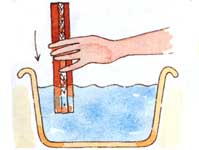
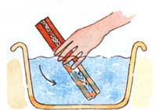
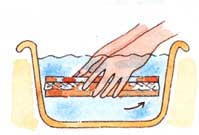
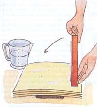
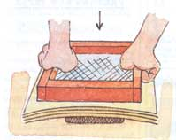
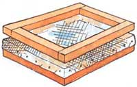

How To Make Homemade Paper
To make pulp, look no further than your waste and recycling bins.
By Marrianne Saddington
December/January 1993
Although making paper is a common enough activity, few are familiar with the techniques involved. As a calligrapher, I was initially drawn to making my own paper so that I would be able to practice my art on interesting and unusual paper.
I'd never realized how simple the process actually is. You probably have most of the equipment already; what you don't have you can make. Also, in addition to creating beautiful stationery, I take pride in knowing that I'm helping to reduce waste in our throwaway society.
Waste into Pulp
Recycled-paper pulp can be made from tissues, computer paper, photocopier paper, wrapping paper, brown paper, note paper or envelopes - all used on their own or in combination. Tear the paper into pieces measuring approximately one inch square and soak in water overnight. The better the quality of the paper, the smaller you need to tear the pieces and the longer you need to soak them. For example, tissues can be torn into quite large pieces and soaked for only 30 minutes, while watercolor paper needs to be torn into pieces less than one inch square and soaked for two or three days. If you're in a hurry, pour boiling water over the torn paper and allow it to stand for an hour or two.
Place a small handful of wet, torn paper and two cups of water in a blender and blend for 15 to 30 seconds. (Thick cardboard or quality papers will take longer.) After a while, experience will tell you how long to blend different kinds of paper. Remember when first starting out, blend paper for the shortest possible time - just long enough for the fibers to separate. Stop the machine after 15 seconds and check; if there are still large pieces of paper visible, allow another 10 seconds and check again. If the pulp is too thick, add more water; do not dilute it too much or you will produce fine, fragile sheets that are difficult to work with. Don't worry about little bits that do not break down entirely; they will add character to the paper.
If you don't have a blender, beat the soaked paper strips into pulp by pounding them in a bucket with a thick stick or bottle filled with water. Although pounding the pulp is historically more authentic than using electric appliances, be forewarned: it is hard, time-consuming work.
After blending the pulp, pour it into a bucket or large plastic bottle until you have enough for several sheets. Figure that one load in the blender will make one thin sheet of 8 1/2" x 11" paper. A two-gallon bucket of pulp will make 20 to 25 sheets.
From Pulp to Paper
Pour three quarts of pulp into a vat (a square plastic dishpan with a capacity of about five gallons of water) and add cold water up to three inches from the top. Then stir the pulp gently with your hand or a wooden spoon. (Do this before forming each sheet to prevent the pulp from settling on the bottom.) Dampen the mesh on your mold (see "Build a Mold & Deckle" ) before forming your first sheet.
Facing the vat, hold the mold with both hands by the short sides and lower vertically into the far side of the vat. Then tilt the mold gently towards you until it is lying horizontally, about two inches below the surface of the water. Be careful not to bump the sides of the vat with the mold, which can cause ridges.
RECYCLING OLD PAPER
In addition to creating beautiful stationery, I take pride in knowing that I'm helping to reduce waste in our throwaway society.
Gradually lift the mold, holding it level, and allow it to drain over the vat for about 15 seconds, until most of the water has drained away. Then tilt it slightly to drain for another 10 seconds. If you have two molds, you can put one aside to drain while you form another sheet with the other. (After every two or three sheets, add another quart of pulp to the vat.)
Next, hold the deckle (see "Build a Mold & Deckle" ) against the mold with your thumbs on top and fingers underneath as you immerse both frames in the vat. As they clear the surface - but before the water drains away - lift them out of the vat. Give the mold and deckle a gentle shake backwards, forwards, and sideways to disperse the fibers. Be sure to move from your shoulders, not just the wrist). Then drain the wet sheet for about 30 seconds before removing the deckle gently. Do not to let any drops fall on the wet sheet - they will leave water marks.
At this point, you have two drying options. The first and easier method is to simply tilt the frame on its side and leave it outside to dry. On a windy or sunny day, the paper will dry within a couple of hours. In sunny weather, and with two molds in operation, it's possible to make up to 112 sheets a day using this method. Be careful of strong winds, however, which can topple the mold and ruin your paper. To prevent this, lean the mold against a flower pot in a sunny location, using a brick or heavy stone placed at the base of it to hold it firm. Another potential disaster is rain, which can create gaping holes, and don't leave your paper outside overnight when small creatures may get to it.
To remove the paper from the mold, slide a sharp knife under a corner of the paper and work it along the top edge in order to loosen it. Then gently peel off the paper. To press, leave paper in a heavy book for a week.
Build a Mold & Deckle
The mold is nothing more than a simple, durable wood frame. To make one, nail or glue at the corners two pieces of 13"-long wood (the sides) with two 8 1/2"-long pieces of wood (the top and bottom). Strips of wood should measure 1" x 2" in thickness, and the inside area of the frame should be 8 1/2" x 11". You can further reinforce the corners with brass L-shaped braces.
Cover the frame with mesh stretched as taut as possible and then pin or nail to the frame. Materials that can be used as mesh include: net curtaining, fiberglass window screening, plastic cross-stitch fabric, silk-screen mesh, or any porous fabric with a fine gauge. If using fabric, wet it before stretching so that it won't sag when placed in water.
The deckle is a removable, open frame that rests on top of the mesh and contains the pulp within the surface area of the screen. It is the same size as the mold and determines the size of the sheet of paper to be formed. If a deckle is not used, the paper formed will be thinner and the edge more irregular. For a simple but perfectly adequate deckle, make a second frame identical to the mold, but only one inch deep. Omit the mesh.(See illustration of mold and deckle )
Method 2: The Couching Technique
Your other option is to "couch" (or lay down) the paper onto wet felt (felt is available at fabric stores). First, create a small pile of five to six wet pieces of felt to form a soft pad. (Without this pad, your paper may form badly.) A wet folded towel or wet piece of carpet pad may also be placed underneath the pad of felts in order to create even more of a cushion.
Next, rest the mold with the long left-hand side of the frame against the right-hand side of the felt, pulp facing left. Hold the mold vertically (your left hand should be holding the raised left side of the frame). Using both hands and a gentle rocking motion, lower the mold (pulp against the felt) down flat on the felt with your left hand, and lift it up with the right. While the motion should be smooth, the pressure should be sufficient enough to transfer the wet pulp onto the felt. Press the mold firmly if this is your first time; with practice you'll be able to do this in one smooth movement. If your first sheet isn't successful, just place another wet felt onto the first sheet of paper and couch a second sheet onto this.
Continue this process until you have a substantial pile of felts and paper. After you've created a pile of 10 or so sheets of paper, feel free to remove the towel or carpet. Then keep piling the felts until you have anywhere between 20 and 50 of them. Now it's time to press.
The simplest way to press a pile of felts is to sandwich them between two boards and stand on the pile for 10 minutes. Then, for even further pressing, stack bricks or a bucket of water on the board and let sit for a few hours. When you return, take out your pile and place on a flat surface. Peel away the top felt in order to reveal the first wet sheet of paper. Separate each felt (with its wet sheet) from the one below. Peel them apart carefully, gently lifting a corner without lifting the sheet below. Go slow.
PRESSING NEW PAPER
The simplest way to press felts is to sandwich them between boards and stand on them for ten minutes.
Then hang your couched paper indoors on a drying rack or clothesline with clothespins to dry. Once dry, remove the paper from the felt by sliding a sharp knife under a corner of the paper and working the knife along the top edge to loosen. Turn the felt over so the paper is face down (on a clean, dry surface) and gently peel the felt away. Press the paper in a heavy book for one week.
Storing Extra Pulp
Newly made or leftover pulp can be stored in sealed bottles or buckets for up to a few weeks. Pour pulp through a drainage bag, stocking, or colander lined with mesh, rinse well under running water, and return it back to its container slightly diluted. Experience will tell you which consistency works best, but a general rule of thumb is to dilute one cup of wet, drained pulp with one to two cups of water. If the pulp is still too thick, dilute it even more so that your sheets won't end up lumpy.
If after a week or so your pulp starts to smell badly, add one teaspoon of household bleach for each two quarts of pulp. Before using the pulp again, however, make sure that you give it a good, thorough rinsing.
For longer storage, some recommend draining and then freezing excess pulp. Others (myself included) suggest draining the excess pulp through mesh and then storing it in the refrigerator in a sealed plastic bag. For indefinite storage, drain pulp through a stocking and hang to dry. When you need some, simply break off pieces, soak them in water for an hour, and blend again.
Editor's Note: Reprinted with permission from Making Your Own Paper: An Introduction to Creative Paper-making by Marianne Saddington . Copyright © New Holland Ltd. Published by Storey Communications.
|
 Five gallon plastic vat is filled with three quartz of pulp and cold water filled to within 3 inches. |
 Tilt mold toward you until it is lying horizontally. |
 Then lift and hold while excess water drains. Stir vat mixture after each sheet to keep pulp from settling to the bottom |
|
 To couch, hold mold vertically. |
 Then lower the mold down onto the felt with your left hand and raise it back up with your right hand in one, smooth motion. |
 Place another section of wet felt over sheet of paper and repeat the process. |
|
 The mold is a durable wood frame, one side of which is covered by a fine-gauge, porous material. It is easily made yourself. |
|
|